Tamanho
Cisto acima de 3 cm.
Adenocarcinoma de pâncreas, tumor neuroendócrino, cistos do pâncreas e colangiocarcinoma: como suspeitar, estadiar e decidir quem vai para a cirurgia.
Organizada a partir da aula e dos slides, com a linguagem ajustada para estudo. A legenda de cores está na página 2.
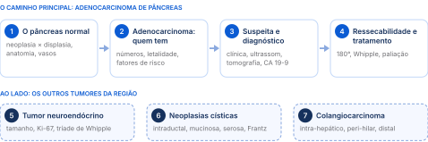
Neoplasia é qualquer crescimento anormal de células, e pode ser benigna. O pâncreas fica escondido atrás do estômago, encostado em artérias que o corpo não pode perder: por isso o tumor é difícil de achar e a cirurgia é uma das mais difíceis do aparelho digestivo.
Neoplasia é um crescimento anormal e excessivo de células. É benigna quando fica contida no seu compartimento; é maligna quando ultrapassa essa barreira e pode invadir ou contaminar outros órgãos.
Displasia também é um crescimento anormal, com mudança no fenótipo (o tipo) da célula, e muitas vezes é precursora do câncer. A sequência vai da célula normal à displasia baixa, moderada e severa, até o câncer invasivo, quando as células atravessam a membrana basal.
Célula normal displasia baixa moderada severa câncer invasivo (rompe a membrana basal)
Chamar toda neoplasia de câncer. Neoplasia pode ser benigna; câncer é a neoplasia maligna, a que invade além do seu compartimento.
O pâncreas é uma glândula do retroperitônio: fica atrás do estômago, perto da coluna, por cima dos corpos das vértebras L1 e L2. Pesa de 60 a 170 g e mede de 12 a 25 cm. É difícil de alcançar na cirurgia.
Divide-se em cabeça, colo, processo uncinado (embaixo da cabeça), corpo e cauda. Os canalículos desembocam no ducto pancreático principal, que chega à segunda porção do duodeno junto com o colédoco, na papila maior, onde fica o esfíncter de Oddi. A papila menor recebe só o ducto pancreático acessório. Atrás do colo passam as veias mesentéricas superior e inferior, que vão formar a veia porta.
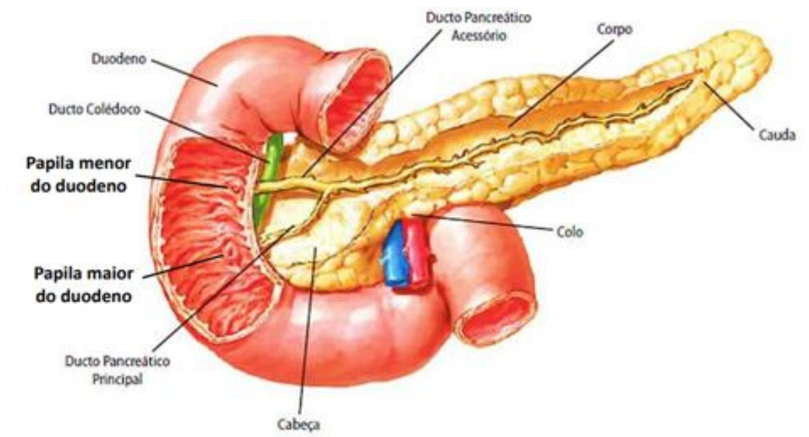
Imagem dos slides da aula.
Ligar a artéria errada mata. Se a artéria mesentérica superior for ligada por engano, o paciente morre: ela irriga todo o intestino delgado. O mesmo acontece se a artéria hepática, que vem do tronco celíaco, for ligada. Com o tumor crescendo colado nesses vasos, é uma das cirurgias mais difíceis do aparelho digestivo.
O adenocarcinoma é o câncer de pâncreas mais comum. Não é frequente, mas mata quase todos que o têm, porque quase sempre é descoberto tarde: não dá sintoma no começo, os sintomas parecem os de outras doenças e não existe exame de rastreio.
O adenocarcinoma responde por 85% dos cânceres de pâncreas. Vem do pâncreas exócrino: como a maior parte do tecido é exócrina, a maior parte dos cânceres é desse tipo, e 95% das neoplasias malignas do pâncreas nascem da parte exócrina. A maioria acomete a cabeça do pâncreas (60 a 70%).
Mata quase cinco vezes mais do que a sua incidência faria esperar: é altamente letal. É mais diagnosticado entre 60 e 70 anos, com idade média de 71 anos ao diagnóstico. Quando aparece algum sintoma, a doença já está avançada. Os sintomas se parecem com os de muitas outras doenças: como o pâncreas é retroperitoneal, a dor pode ser confundida com dor lombar, dor no estômago ou um desconforto abdominal, e várias hipóteses passam antes do câncer de pâncreas. O órgão também fica escondido por outros nos exames de imagem.
Não existe programa de rastreio: não há evidência de que rastrear traga mais benefício do que risco, e por isso o diagnóstico é sempre mais tardio.
“Talvez se tivesse diagnóstico precoce ou um programa de prevenção, a gente ia curar muito mais pacientes com câncer de pâncreas.”
A estimativa do Instituto Nacional de Câncer é de cerca de 13.244 casos novos por ano de 2026 a 2028, um pouco mais em mulheres: risco de 6,08 por 100 mil homens e 6,28 por 100 mil mulheres. É o nono câncer mais comum, sem contar o câncer de pele não melanoma (carcinoma espinocelular e carcinoma basocelular). O risco individual continua baixo.
Cascavel tem cerca de 350 mil habitantes: isso dá uns 15 casos por ano, felizmente pouco. No mapa do Brasil, a incidência é menor no Norte e no Nordeste talvez porque lá se diagnostica e se notifica menos: às vezes o paciente morre sem saber do quê.
Nos Estados Unidos, a sobrevida em 5 anos é de 13,7%: só cerca de 13% vivem 5 anos depois do diagnóstico. Os casos novos aumentam um pouco a cada ano, e a curva de mortalidade acompanha a de incidência. Com mediana de 71 anos ao diagnóstico e média de óbito aos 73, são cerca de 2 anos de vida em média.
A sobrevida global vem melhorando com novas quimioterapias, imunoterapia e diagnóstico mais precoce. A doença é rara em jovens, mas acontece:
“Recentemente operei uma menina de 12 anos com um tumor de pâncreas, acho que foi o caso mais jovem que eu operei.”
Tirando a pancreatite crônica, são os mesmos fatores de risco da maioria dos cânceres.
Um estudo mostrou que o diabético tem risco relativo de 2,08 em relação a quem não tem diabetes, talvez por uma biologia tumoral mais desfavorável. Por isso, paciente com poliúria (urina demais) e polidipsia (muita sede) deve sempre ser investigado para diabetes.
Critérios lembrados na aula, para o posto de saúde.
Na pancreatite hereditária e na síndrome de Peutz-Jeghers, o risco de câncer de pâncreas aos 70 anos vai de 11 a 66%. Peutz-Jeghers é autossômica dominante (50% de chance de passar para cada filho), com mutação na linhagem germinativa de um gene supressor tumoral (STK11, também chamado LKB1). Dá manchas melanocíticas na boca e nos lábios e numerosos pólipos hamartomatosos no tubo digestivo. É rara: o Dr. Bonatto nunca viu um paciente com ela.
Dá diarreia, perda de peso, vômitos e fezes amareladas e gordurosas (esteatorreia). As causas são cigarro, álcool, doença pancreática hereditária, fibrose cística, doença autoimune, pancreatites agudas de repetição e alterações genéticas. A radiografia simples do abdome pode mostrar as calcificações do pâncreas.
Perda de peso, falta de apetite, dor na boca do estômago e icterícia fazem pensar no tumor. Um ultrassom simples já levanta a suspeita; a tomografia confirma, mostra se ele pode ser operado e, junto com o marcador do sangue, dá o ponto de partida do seguimento.
Os mais comuns são astenia (fraqueza), perda de peso, anorexia (falta de apetite), dor abdominal e dor epigástrica. O tumor da cabeça do pâncreas aperta o colédoco e dá a síndrome ictérica: icterícia, colúria (urina escura), acolia fecal (fezes claras) e prurido.
Aparecem em 7 a 9% dos pacientes metastáticos: massa abdominal palpável (pouco comum); ascite, na doença bem avançada; linfonodo de Virchow, aumentado na região supraclavicular esquerda; e nódulo da Irmã Maria José, metástase no umbigo.
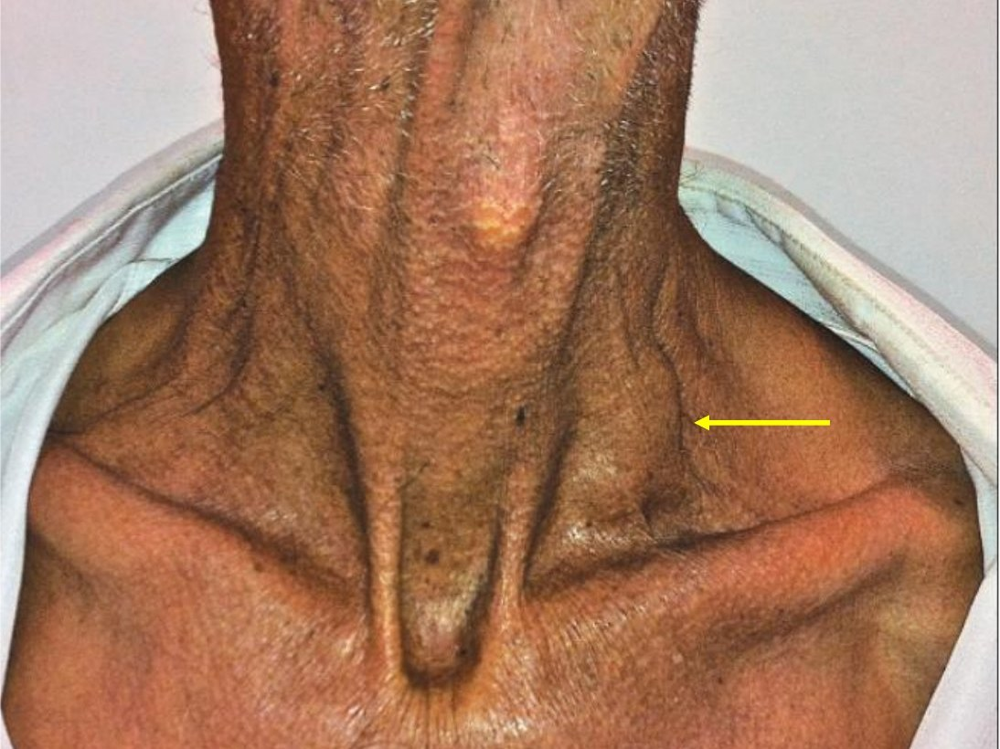
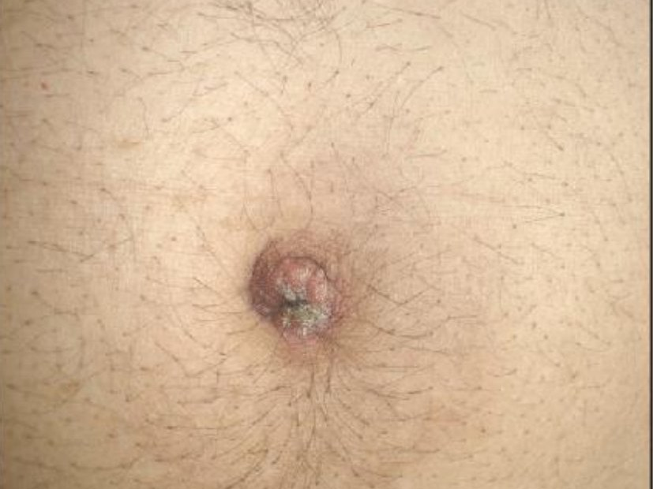
Imagens dos slides da aula.
Só pelos sinais e sintomas não dá para fechar o diagnóstico. Diante de icterícia, perda de peso, dor epigástrica ou dor lombar, um ultrassom simples, já no posto de saúde, pode levantar a suspeita. Sinais indiretos: vesícula biliar aumentada e distendida (o tumor aperta o colédoco e a bile não sai), dilatação do hepatocolédoco acima do tumor e a própria massa na cabeça do pâncreas.
Com a suspeita clínica, o caso vai para uma reunião multidisciplinar e pedem-se tomografia de abdome superior com protocolo pancreático (ou ressonância magnética), tomografia de tórax para o estadiamento e o marcador CA 19-9. Conforme a lesão e a discussão:
A imagem típica é uma massa hipoatenuante (mais escura que o pâncreas ao redor), mal delimitada. Lesões menores podem ser isoatenuantes, da mesma cor do tecido, e passar despercebidas. Atenuação é o quanto o raio X é diminuído ao atravessar o corpo: a lesão hipoatenuante é menos densa, deixa passar mais radiação e fica mais escura.
A lesão obstrutiva da cabeça do pâncreas dá o sinal da dupla dilatação: dilata o colédoco acima do tumor (e a vesícula) e também o ducto pancreático principal, o ducto de Wirsung. Na ressonância, aparecem o ducto principal dilatado e a lesão sólida hipointensa. As imagens podem mostrar a lesão na cabeça, no corpo ou na cauda, inclusive em cortes frontais e em 3D.
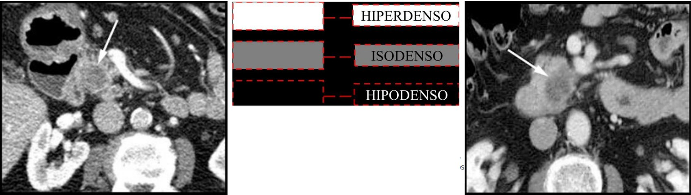
Imagem dos slides da aula.
Com imagem típica de tumor de pâncreas, não é preciso biopsiar para ir direto à cirurgia. Se o paciente vai fazer quimioterapia, antes da cirurgia (neoadjuvante) ou paliativa, a biópsia é obrigatória: ela define o tipo histológico e qual quimioterápico usar.
Faz-se de preferência por ecoendoscopia, com punção aspirativa por agulha fina, e o material vai para o anatomopatológico. Na doença não metastática, a biópsia pela ecoendoscopia é preferível à guiada por tomografia, porque tem menor risco de espalhar o tumor pelo peritônio.
Achar que todo tumor precisa de biópsia antes da cirurgia. Com imagem típica e lesão ressecável, opera-se direto; a biópsia é obrigatória quando vai haver quimioterapia.
Na colangiopancreatografia retrógrada endoscópica, o endoscopista passa um fio-guia pela papila e coloca uma prótese biliar, que desobstrui a via e melhora a icterícia. Quando o paciente vai operar, é uma ponte para a cirurgia: evita colangite durante e depois da operação e diminui o risco de infecção. Se a quimioterapia vem antes, a drenagem é sempre indicada, porque o fígado precisa funcionar bem para metabolizar o quimioterápico.
Segundo alguns estudos, em tumor de cabeça que obstrui a via biliar.
O CA 19-9 (antígeno carboidrato 19-9) é uma glicoproteína do tipo mucina, de alto peso molecular, que fica na superfície de algumas células cancerígenas. Não é específico: sobe em outros cânceres e em doenças benignas. Mesmo assim, no estadiamento é obrigatório dosar, para ter um valor de base e acompanhar no seguimento se ele sobe ou desce.
Valor normal no sangue.
Tomar CA 19-9 alto como diagnóstico de câncer. Colestase e colangite também o elevam; ele serve de base para comparar no seguimento.
O PET-CT (tomografia por emissão de pósitrons) é pouco pedido: só quando há dúvida numa imagem da tomografia ou para reavaliar depois da quimioterapia; na maioria das vezes, a tomografia basta. Pelo slide, pode ser considerado em pacientes de alto risco para achar metástases e antes e depois da neoadjuvância, para avaliar a resposta.
O estadiamento usa a classificação TNM (tumor, linfonodos, metástase):
Só a cirurgia pode curar, mas só 15 a 20% dos pacientes chegam a ela. O que decide é ter ou não metástase e o quanto o tumor abraça as grandes artérias: até meia volta (180°) ainda dá para tentar, em geral depois da quimioterapia.
A ressecção cirúrgica é a única terapia potencialmente curativa, e só em quem não tem metástase. Ao diagnóstico, apenas 15 a 20% são candidatos à cirurgia; com metástase, a cirurgia curativa está contraindicada. Entre os operados, quanto maior o tumor (T1, T2, T3) e quanto mais linfonodos comprometidos, menor a sobrevida depois da cirurgia.
A ressecabilidade se avalia sempre, em reunião multidisciplinar, pelos critérios da diretriz norte-americana National Comprehensive Cancer Network. Com metástase, o tumor é irressecável. Sem metástase, conta o contato do tumor com a artéria mesentérica superior e com o tronco celíaco, que não podem ser ligados, e com as veias.
Reconstruir a veia (mesentérica superior ou porta) é mais fácil que reconstruir artéria: a maioria dos tumores com invasão venosa reconstruível faz quimioterapia antes e cirurgia depois. Pelo slide da diretriz, também é limítrofe o contato com a artéria hepática comum que não chega ao tronco celíaco, e o contato com a veia cava inferior. Na tomografia, a veia deformada pelo tumor ganha forma de gota ou lágrima: é o sinal da gota.
O tumor ressecável, livre dos vasos, pode ir direto para a cirurgia (em inglês, upfront); na prática, a maioria dos cirurgiões faz assim. Se houver fator de alto risco, recomenda-se a terapia neoadjuvante, quimioterapia antes da cirurgia, que exige biópsia. Depois da neoadjuvância, repete-se a tomografia e reavalia-se a cirurgia.
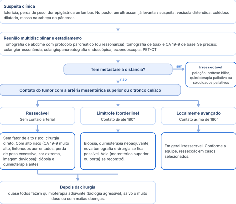
Para o tumor da cabeça do pâncreas, faz-se a gastroduodenopancreatectomia (cirurgia de Whipple) com linfadenectomia regional: a maior cirurgia do aparelho digestivo. O que sai:
O piloro pode ser preservado ou retirado; a tendência da maioria dos cirurgiões é tirá-lo junto, para ter mais margem de segurança oncológica. A grande dificuldade é a reconstrução, em Y de Roux ou em alça única, com três anastomoses:
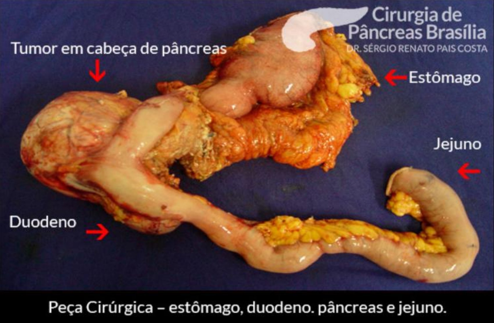
Imagem dos slides da aula.
Para o tumor de corpo e cauda, faz-se a pancreatectomia distal (corpo-caudal) com esplenectomia e linfadenectomia regional: o baço sai junto porque é preciso tirar todos os linfonodos do hilo esplênico e da artéria esplênica.
Sem o baço, aumenta o risco de infecções graves, até fatais, por bactérias encapsuladas. Na esplenectomia eletiva, vacina-se antes: antipneumocócica, contra Haemophilus influenzae tipo B e antimeningocócica. Na cirurgia de urgência, como no trauma, vacina-se depois da operação.
Pneumococo, Haemophilus influenzae tipo B e meningococo.
A maioria dos operados faz quimioterapia adjuvante, porque a biologia do tumor é muito agressiva e a recidiva costuma ser precoce; a exceção é o paciente muito idoso ou com muitas doenças. Na doença metastática, avalia-se o estado funcional do paciente (em inglês, performance status): se está ictérico, passa-se uma prótese biliar; se está bem, quimioterapia paliativa; se está muito grave, só cuidados paliativos.
Se o endoscopista não consegue passar a prótese, porque o tumor é muito grande ou duro, há duas saídas. A primeira é a drenagem biliar trans-hepática percutânea, feita pelo radiologista intervencionista: ele punciona o fígado por fora e leva um fio-guia até o duodeno (o encontro com o endoscopista, em inglês rendezvous) ou deixa um dreno biliar externo ou interno-externo. A segunda é a derivação biliodigestiva cirúrgica: o colédoco acima do tumor é ligado a uma alça do intestino.
É um tumor raro e lento das células do pâncreas ligadas aos hormônios. A maioria não produz hormônio e aparece por acaso num exame: aí o tamanho decide entre observar e operar. Os poucos que produzem hormônio dão quadros clássicos de prova.
A síndrome hereditária mais comum é a neoplasia endócrina múltipla tipo 1, por mutação no gene MEN1, um supressor tumoral. Cursa com os “três P”: tumores da pituitária (hipófise), da paratireoide e do pâncreas.
O insulinoma (1 a 3%) secreta insulina; fica no pâncreas em mais de 99% das vezes. Dá a tríade de Whipple, muito cobrada em provas de residência:
Confundir tríade de Whipple com cirurgia de Whipple. A tríade é do insulinoma (hipoglicemia); a cirurgia é a gastroduodenopancreatectomia do tumor de cabeça do pâncreas.
O gastrinoma (0,5 a 2%) secreta gastrina e causa a síndrome de Zollinger-Ellison, também clássica de prova de residência: hipersecreção de ácido e múltiplas úlceras pépticas refratárias no estômago e no duodeno. Pelo slide, dá também dor abdominal, refluxo e diarreia, e fica mais no duodeno (70%) do que no pâncreas (25%). Existem ainda outros, mais raros: glucagonoma, VIPoma e somatostatinoma.
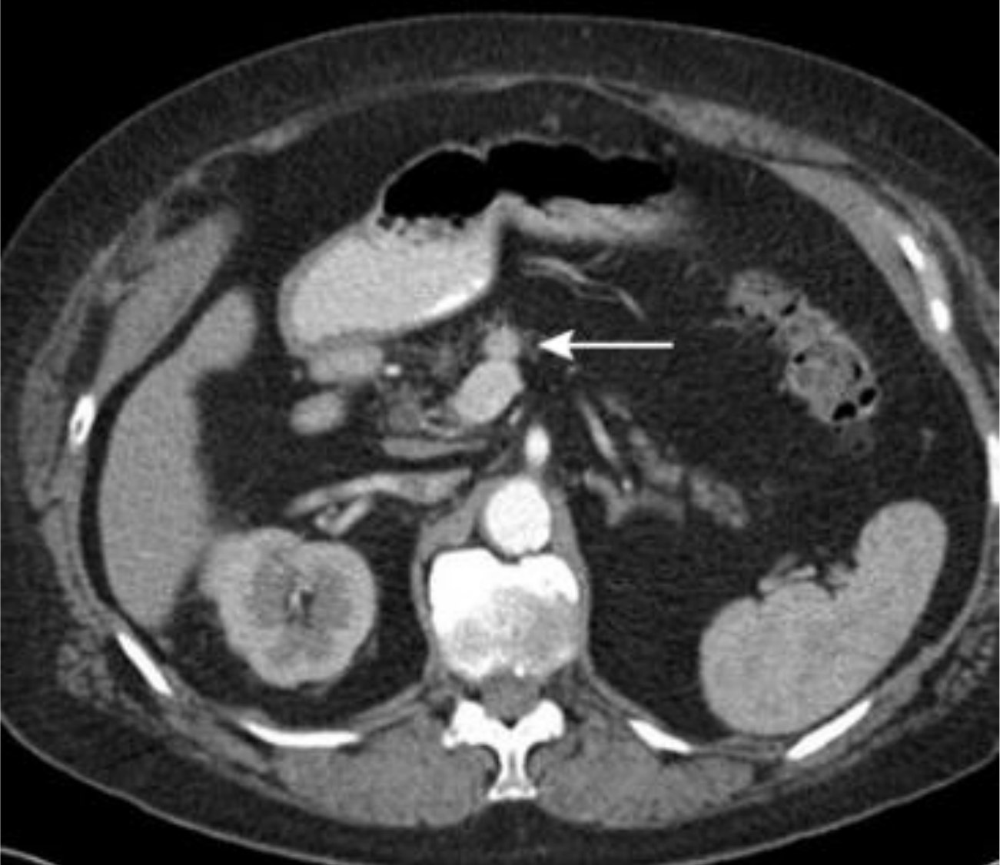
Imagem dos slides da aula.
O tumor funcionante vai para a cirurgia. Pelo slide da diretriz, também se opera o tumor invasivo ou com linfonodo comprometido.
A classificação da Organização Mundial da Saúde, usada também pela diretriz norte-americana, combina o índice mitótico com o Ki-67, uma proteína do núcleo que marca as células em proliferação. Quanto maiores o Ki-67 e as mitoses, mais agressivo o tumor; felizmente, a maioria é grau 1. À parte ficam os carcinomas neuroendócrinos pouco diferenciados.
Os três graus são de tumores neuroendócrinos bem diferenciados.
Cistos no pâncreas aparecem cada vez mais em exames pedidos por outro motivo. Quase todos têm baixo risco: o trabalho é reconhecer os poucos que podem virar câncer, operar esses e tranquilizar o resto.
As neoplasias císticas podem ser benignas ou malignas. O diagnóstico vem aumentando muito, pelo uso maior de tomografia e ressonância e pelo envelhecimento da população (a frequência aumenta com a idade). Em geral o risco de malignidade é baixo, mas é fundamental diferenciar os tipos, para orientar e tranquilizar o paciente no consultório.
Valem para qualquer cisto e voltam nos critérios da neoplasia intraductal.
Cisto acima de 3 cm.
Componente sólido (nódulo mural) dentro do cisto.
Dilatação do ducto pancreático principal.
As quatro principais são a neoplasia mucinosa papilífera intraductal, a neoplasia cística mucinosa, a neoplasia cística serosa e a neoplasia sólida pseudopapilar (tumor de Frantz).
Nasce no epitélio do ducto pancreático, produz mucina e cresce dentro dos ductos, que ficam com dilatação cística. Em laudos e livros aparece pela sigla em inglês, IPMN. Pode ser do ducto principal, dos ductos secundários ou mista (os dois). Fatores de risco, pelo slide: tabagismo, diabetes, história familiar de adenocarcinoma ductal do pâncreas, síndrome de Peutz-Jeghers e polipose adenomatosa familiar.
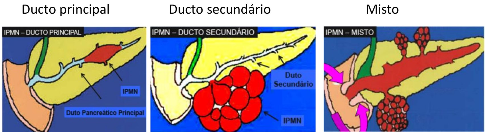
Imagem dos slides da aula.
A maioria é assintomática, achada por acaso. Quando a mucina espessa obstrui a saída do suco pancreático, pode dar dor abdominal, náuseas e pancreatite aguda de repetição; pelo slide, também vômitos, dor nas costas, perda de peso e anorexia e, com o ducto principal obstruído, insuficiência pancreática exócrina e endócrina. CA 19-9 e antígeno carcinoembrionário elevados sugerem malignização.
O tipo do ducto muda tudo.
A lesão evolui de displasia de baixo grau para moderada, de alto grau e carcinoma. Pelo slide, aumentam o risco: componente sólido, tamanho acima de 3 cm, ducto principal acima de 1 cm, linfonodos aumentados, idade avançada, sintomas e os tipos histológicos oncocítico e pancreatobiliar. A investigação costuma ser com ressonância e tomografia.
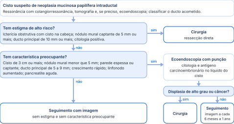
Na ecoendoscopia, a mucina se desloca quando o paciente muda de posição; o nódulo tumoral não se move e tem fluxo ao Doppler. A punção traz a citologia, que busca células atípicas ou malignas, e o antígeno carcinoembrionário do líquido do cisto. Com displasia de alto grau ou câncer, cirurgia; sem isso, seguimento com ressonância ou tomografia a cada 6 meses a 1 ano.
Elevado, tem alta sensibilidade e especificidade para lesão mucinosa.
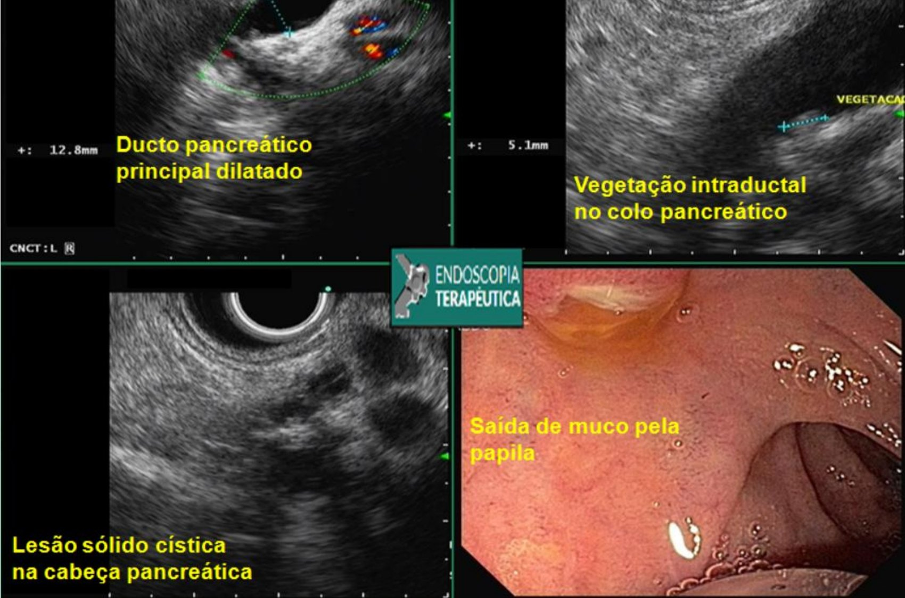
Imagem dos slides da aula.
A Organização Mundial da Saúde separou da forma clássica a neoplasia tubulopapilar intraductal e a neoplasia papilar oncocítica intraductal, que têm perfil genético, comportamento e aspecto diferentes. A maioria já tem displasia de alto grau ou câncer invasivo ao diagnóstico: o risco de malignidade é alto e a cirurgia é indicada.
É uma grande parcela das lesões císticas do pâncreas. Acomete quase só mulheres, com idade média de 50 anos, e prefere o corpo e a cauda (até 90%, pelo slide). Também secreta mucina, mas não se comunica com o ducto pancreático, ao contrário da intraductal. É unilocular ou multilocular, com septos finos. Tem potencial maligno significativo e, em geral, vai para a cirurgia, sobretudo com 4 a 5 cm ou mais, parede irregular ou espessa, calcificação periférica em “casca de ovo” ou componente sólido (nódulo mural).
Trocar as duas mucinosas. A intraductal e a cística mucinosa produzem mucina, mas só a intraductal se comunica com o ducto pancreático.
Cerca de 30% das lesões císticas, mais comum na sexta década e em mulheres (3 a 4 mulheres para cada homem). É benigna: virar cistoadenocarcinoma seroso é raríssimo, só há relatos de caso. O sinal patognomônico na imagem é a cicatriz central estrelada, muitas vezes calcificada, com aspecto microcístico em favo de mel. A maioria não dá sintoma; quando dá, é pelo efeito de massa: desconforto abdominal e plenitude gástrica (pelo slide, lesões acima de 4 cm dão até 3 vezes mais sintomas).
A conduta é seguimento clínico e com imagem. A cirurgia fica para o cisto gigante com sintomas compressivos importantes, o crescimento muito rápido ou a dúvida diagnóstica que persiste.
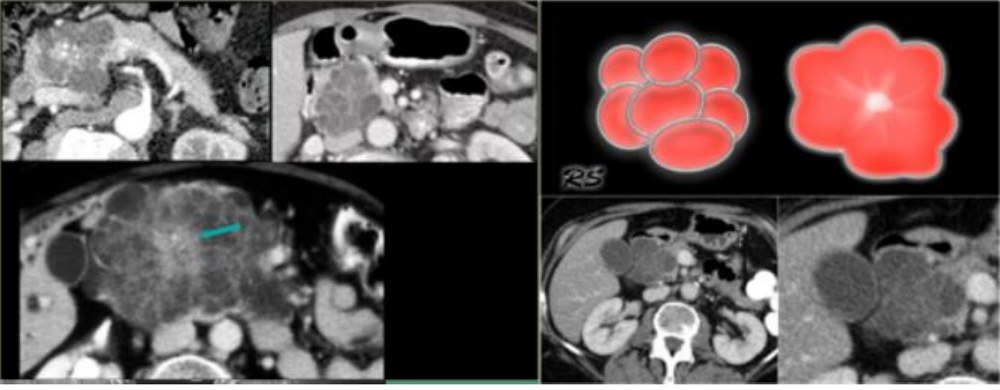
Imagem dos slides da aula.
É raro: 1 a 3% dos tumores exócrinos do pâncreas, descrito por Frantz em 1959. Típico de mulheres jovens, na segunda e na terceira décadas de vida, como a paciente de 12 anos citada no capítulo 02. O sintoma mais comum é a dor abdominal, seguida de náuseas, vômitos, perda de peso e sensação de inchaço. Na tomografia e na ressonância, é uma grande lesão sólido-cística bem demarcada, muitas vezes com necrose central, hemorragia e calcificações (em até 30%, pelo slide).
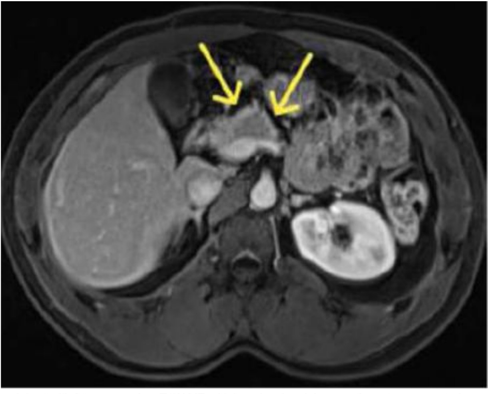
Imagem dos slides da aula.
Tem sempre indicação de cirurgia, pelo potencial de malignidade (sobretudo acima de 5 cm). O prognóstico e a sobrevida são excelentes, mesmo com doença localmente avançada ou metastática: está indicada até a citorredução, a retirada cirúrgica das metástases.
É o câncer dos canais que levam a bile. É raro, mas agressivo, e costuma ser descoberto já avançado. O lugar onde nasce (dentro do fígado, no encontro dos ductos ou perto do pâncreas) muda os sintomas e a cirurgia.
O colangiocarcinoma surge do epitélio dos ductos biliares. É raro, mas extremamente agressivo e letal, porque em geral já está localmente avançado ao diagnóstico. Pela anatomia, é intra-hepático, peri-hilar ou distal (os dois últimos, extra-hepáticos).
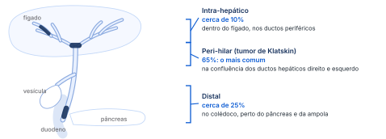
Nasce nos ductos biliares periféricos, dentro do fígado. Acomete sobretudo idosos (pelo slide, 75% têm mais de 65 anos), um pouco mais os homens, e tem prognóstico péssimo. Pela forma, divide-se em quatro tipos (Grupo de Estudo do Câncer de Fígado do Japão, 1997):
É muito comum na Ásia: em áreas endêmicas, até 113 casos por 100 mil homens e 50 por 100 mil mulheres; nos Estados Unidos, cerca de 3.000 casos por ano. É o clássico tumor de Klatskin, que envolve a junção (bifurcação) dos ductos hepáticos direito e esquerdo. Sem tratamento, o paciente morre em 6 meses a 1 ano. A extensão se descreve pela classificação de Bismuth-Corlette:
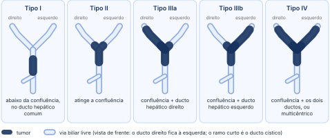
O colangiocarcinoma distal faz parte dos tumores periampulares, junto com o adenocarcinoma da cabeça do pâncreas, o tumor da ampola de Vater e o adenocarcinoma da segunda porção do duodeno. Responde por 5 a 10% deles. A sobrevida em 5 anos é muito baixa: de menos de 5% a 20%, conforme o estadiamento.
No tumor distal, abaixo da entrada do ducto cístico: vesícula biliar palpável, distendida e indolor num paciente ictérico.
Na suspeita, pedem-se tomografia de tórax e de abdome total e colangiorressonância, e o caso é discutido em reunião multidisciplinar.
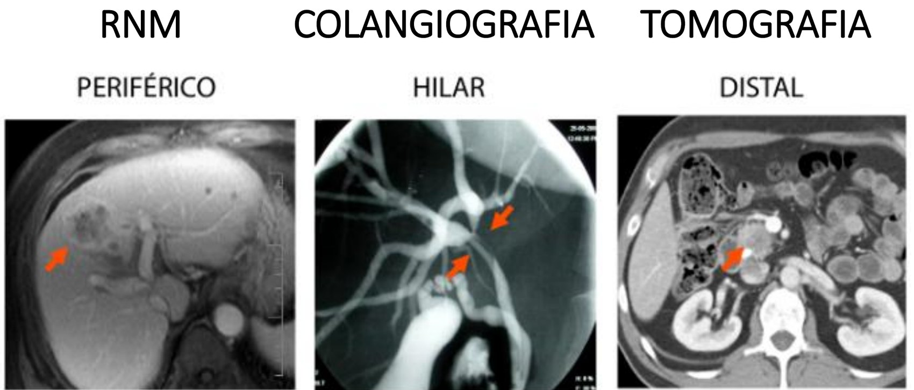
Imagem dos slides da aula.
Durante a ressecção do fígado, clampeia-se o ligamento hepatoduodenal (com o colédoco, a artéria hepática e a veia porta) por períodos de até 15 minutos, para sangrar menos.
Depois da ressecção do colangiocarcinoma distal, quanto mais profundo o tumor (T3 em relação a T1) e quanto mais linfonodos comprometidos, muito menor a sobrevida em 5 anos.
Neoplasia não é câncer: pode ser benigna; câncer é a neoplasia maligna, que invade.
Adenocarcinoma de pâncreas: tardio, sem rastreio e altamente letal. 51% já têm metástase ao diagnóstico; em 5 anos, vivem 40 a 44% dos localizados e 3 a 4% ou menos dos metastáticos.
Diabetes: risco 2,08 vezes maior. Poliúria e polidipsia: sempre investigar.
CA 19-9: obrigatório como base (normal até 37 U/mL); não é específico.
Biópsia: só obrigatória se houver quimioterapia; o ressecável típico opera direto.
Ressecabilidade: sem contato arterial, ressecável; até 180° com a mesentérica superior ou o tronco celíaco, limítrofe; acima de 180°, localmente avançado; com metástase, irressecável.
Cirurgia de Whipple: antro e piloro, duodeno, cabeça do pâncreas, colédoco distal, vesícula e linfonodos; três anastomoses (a pancreatojejunal é a que mais fistuliza). Vale também no colangiocarcinoma distal.
Esplenectomia eletiva: vacinar contra pneumococo, Haemophilus influenzae tipo B e meningococo 2 semanas antes.
Tríade de Whipple (insulinoma): hipoglicemia, glicemia abaixo de 50 mg/dL e melhora com glicose.
Zollinger-Ellison (gastrinoma): ácido demais e úlceras pépticas múltiplas e refratárias.
Cisto com risco: acima de 3 cm, com componente sólido ou com o ducto principal dilatado.
Tumor de Frantz: mulher jovem, sólido-cístico; sempre cirurgia, prognóstico excelente.